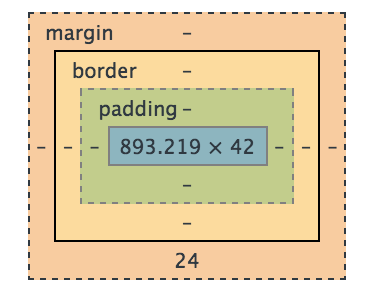

Ok so picture that you have some eyes and some noses a few chins, eye brows and all the rest. All you need to make a face. That's your Html. Now your CSS is what you want your face to look like. Your face can seem like a Picasso painting. Or like a barbie. Now your DOM is kinda hard to explain. Think of it like an x-ray but also a plastic surgeon too. It looks at your code as a whole, through the layers of skin and even down to the bone. Within this tool, you can change where your nose goes or what colour your eyes are. This is only temporary, a kind of preview of what you can create. One must copy the settings you change and put them into the base of your code.
Braking down of a design into boxes. A Website is just lots of boxes, some within more boxes.
A CSS element that incloses all items. There is the content area (the primary element) that is then surrounded by a padding area, boarder and finally margin area.
